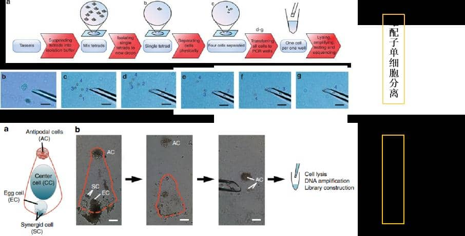
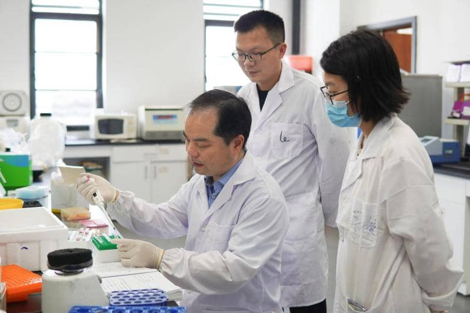
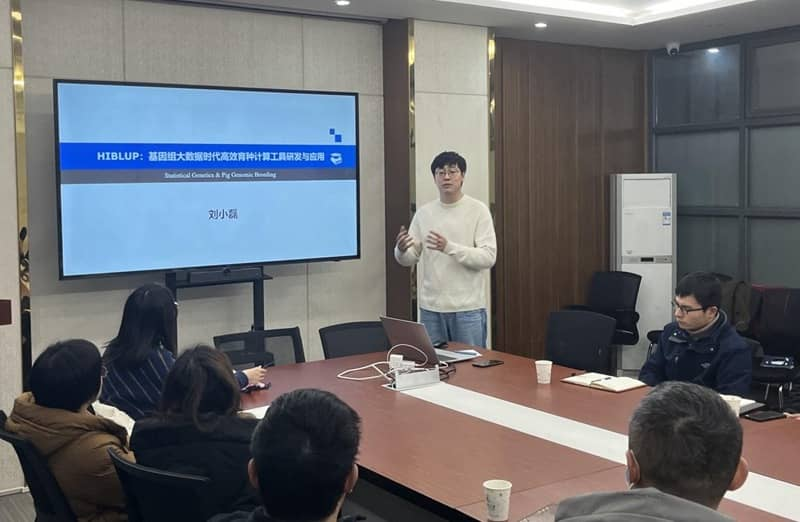
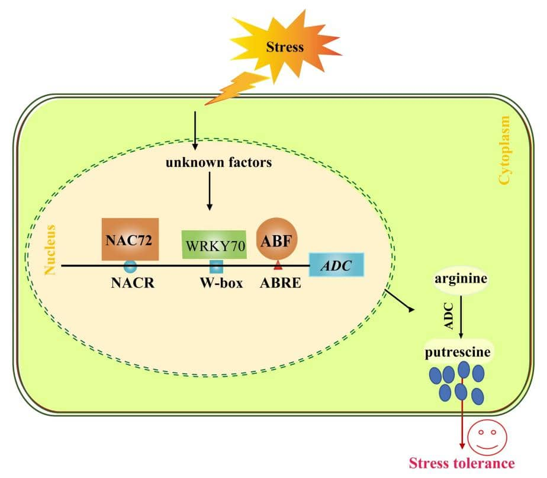

5 achievements of our school won the 2022 Outstanding Scientific Research Achievement Award of Higher Education Institutions
Nanhu News Network (Correspondent Zhang Yao) Recently, the Ministry of Education announced the results of the
2022 Higher Education Outstanding Scientific Research Achievement Award (Science and Technology). As the first
completion unit, our school won 5 awards, including 2 first prizes and 2 second prizes 2 awards and 1 youth
award.
The team of Professor Yan Jianbing from the School of Plant Science and Technology won the first prize of the
Natural Science Award for the achievement of "Analysis of the Reproductive Development Mechanism of Maize
Driven by Plant Single-Cell Technology". Aiming at the analysis of the genetic mechanism of maize reproductive
development, the project pioneered a series of plant single-cell omics sequencing technologies, which analyzed
the laws and mechanisms of genetic recombination differences between male and female maize through
single-spore sequencing, and provided theoretical guidance for the selection of breeding parents; Genetic
sequencing revealed that maize male gametes have methylation reprogramming characteristics, providing a new
perspective for understanding reproductive development; pollen single-nucleus sequencing clarified the
mechanism of maize haploid induction and male sterility, providing theoretical support for the development of
new breeding technologies. Single-cell methylation sequencing technology was named one of the annual
technological innovations by Molecular Plant magazine.

For the first time, the single-cell sequencing technology of maize male and female gametes has been broken through The team of Professor Yan Xianghua from the School of Animal Science and Technology and the School of Veterinary Medicine won the first prize of the Natural Science Award for the achievement "Leucine regulates the protein metabolism and energy metabolism of early weaned piglets". This project confirmed for the first time that early weaning stress can induce autophagy in piglets, clarified the mechanism of leucine as a signaling molecule to regulate protein metabolism (autophagy) through the two pathways of Barkor-mTOR and miRNA-ULK1, and analyzed the role of leucine in regulating protein metabolism (autophagy). Mechanisms by which signaling molecules promote energy metabolism in piglet intestinal epithelium and regulate energy metabolism in skeletal muscle of early weaned piglets. For the first time, the academic point of view that "leucine doubles as a protein synthesis substrate and a signal molecule" is proposed.

Professor Liu Xiaolei from the School of Animal Science and Technology and the School of Veterinary Medicine won the Youth Science Award. This is the first time our school has won this award. The average annual number of awards awarded by the Ministry of Education does not exceed 10. Liu Xiaolei created the world's first pig integrated omics knowledge base based on artificial intelligence and big data technology, and opened up the "last mile" from genome-wide association analysis to key gene screening; developed genome breeding algorithms and software with independent intellectual property rights , realized the efficient calculation of big data for genome selection and matching of millions of populations, fully adapted to the domestic "Kunpeng" ecology, and applied it in leading pig breeding companies such as COFCO and Yangxiang. The scientific research version was adopted by more than 60 countries including the United States and Denmark The national use has improved the level of innovation in the field of genome breeding big data computing in my country.

The "Abiotic Stress Response Mechanism and Molecular Regulatory Network of Citrus" completed by the team of Professor Liu Jihong from the School of Horticulture and Forestry won the second prize of the Natural Science Award. Aiming at the main abiotic adversity that restricts the development of citrus industry, the project revealed the molecular mechanism of citrus accumulating metabolites such as putrescine and proline in response to adversity, and built the most comprehensive transcriptional regulation network for putrescine synthesis in the world, which will help citrus resist stress. The creation of germplasm has laid an important theoretical foundation. Based on theoretical research, the technology of citrus fruit overwintering and keeping trees fresh has been developed with the core of spraying exogenous polyamines.

The team of Professor Yang Liguo from the School of Animal Science and Technology and the School of Veterinary Medicine won the second prize of the Science and Technology Progress Award for the achievement of "Cattle Estrus Ovulation Regulation and Identification Key Technology". This technology has carried out systematic research on estrus and ovulation regulation, estrus identification, timely insemination, timing insemination, etc., and innovated theories of cow estrus and ovulation endocrine regulation and estrus identification. Estrus ovulation and estrus identification and early pregnancy diagnosis. Invented 19 patent technologies related to cow estrus ovulation regulation and identification, obtained 6 new veterinary drug certificates, developed 6 hormone products, 3 types of equipment, and 7 computer software, some of the achievements have been transformed, and significant economic benefits have been obtained. Reviewer